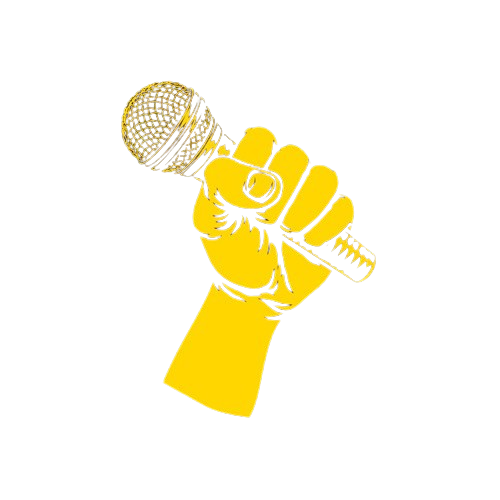

𝕽ᥱzᥲ 𝕻іsһr᥆

𝐚𝐛𝐨𝐮𝐭 𝐟𝐨𝐫 𝐫𝐚𝐩 - 𝐡𝐢𝐩 𝐡𝐨𝐩 :
𝐁𝐫𝐞𝐚𝐤𝐢𝐧𝐠 𝐡𝐚𝐬 𝐜𝐨𝐩𝐢𝐞𝐝 𝐟𝐫𝐨𝐦 𝐦𝐚𝐧𝐲 𝐝𝐚𝐧𝐜𝐞 𝐬𝐭𝐲𝐥𝐞𝐬 𝐭𝐨 𝐠𝐞𝐧𝐞𝐫𝐚𝐭𝐞 𝐭𝐡𝐢𝐬 𝐮𝐧𝐢𝐪𝐮𝐞𝐧𝐞𝐬𝐬.
𝐓𝐡𝐞𝐬𝐞 𝐬𝐭𝐲𝐥𝐞𝐬 𝐢𝐧𝐜𝐥𝐮𝐝𝐞 𝐭𝐡𝐞 𝐂𝐡𝐚𝐫𝐥𝐞𝐬𝐭𝐨𝐧 𝐟𝐫𝐨𝐦 𝟏𝟎𝟎 𝐲𝐞𝐚𝐫𝐬 𝐚𝐠𝐨 𝐭𝐡𝐚𝐭 𝐥𝐨𝐚𝐧𝐞𝐝 𝐢𝐭𝐬 𝐜𝐡𝐚𝐫𝐚𝐜𝐭𝐞𝐫𝐢𝐬𝐭𝐢𝐜 𝐥𝐞𝐠 𝐤𝐢𝐜𝐤 𝐚𝐧𝐝 𝐚𝐫𝐦
𝐬𝐰𝐢𝐧𝐠 𝐚𝐬 𝐚 𝐭𝐨𝐩-𝐫𝐨𝐜𝐤𝐢𝐧𝐠 𝐦𝐨𝐯𝐞. 𝐓𝐡𝐞 𝐚𝐝-𝐥𝐢𝐛𝐛𝐢𝐧𝐠 𝐨𝐟 𝐭𝐡𝐞 𝐋𝐢𝐧𝐝𝐲 𝐇𝐨𝐩, 𝐩𝐨𝐩𝐮𝐥𝐚𝐫 𝐟𝐫𝐨𝐦 𝐭𝐡𝐞 𝟏𝟗𝟐𝟎𝐬 𝐨𝐧, 𝐚𝐥𝐬𝐨 𝐥𝐢𝐯𝐞𝐬 𝐢𝐧
𝐛𝐫𝐞𝐚𝐤𝐢𝐧𝐠’𝐬 𝐬𝐭𝐲𝐥𝐞. 𝐅𝐨𝐫 𝐢𝐧𝐝𝐢𝐯𝐢𝐝𝐮𝐚𝐥 𝐢𝐧𝐬𝐩𝐢𝐫𝐚𝐭𝐢𝐨𝐧, 𝐭𝐡𝐨𝐮𝐠𝐡, 𝐧𝐨 𝐨𝐧𝐞 𝐜𝐚𝐧 𝐛𝐞𝐬𝐭 𝐬𝐨𝐮𝐥 𝐬𝐢𝐧𝐠𝐞𝐫 𝐉𝐚𝐦𝐞𝐬 𝐁𝐫𝐨𝐰𝐧.
𝐇𝐢𝐬 𝐡𝐢𝐠𝐡-𝐞𝐧𝐞𝐫𝐠𝐲 𝐝𝐚𝐧𝐜𝐞 𝐦𝐨𝐯𝐞𝐬 𝐢𝐧 𝐭𝐡𝐞 𝟏𝟗𝟔𝟎𝐬 𝐚𝐧𝐝 𝟕𝟎𝐬 𝐡𝐚𝐯𝐞 𝐢𝐧𝐬𝐩𝐢𝐫𝐞𝐝 𝐛-𝐛𝐨𝐲𝐬 𝐚𝐧𝐝 𝐛-𝐠𝐢𝐫𝐥𝐬 𝐞𝐯𝐞𝐫 𝐬𝐢𝐧𝐜𝐞,
𝐚𝐧𝐝 𝐡𝐢𝐬 𝐬𝐨𝐧𝐠 “𝐆𝐞𝐭 𝐨𝐧 𝐭𝐡𝐞 𝐆𝐨𝐨𝐝 𝐅𝐨𝐨𝐭” 𝐢𝐬 𝐨𝐧𝐞 𝐨𝐟 𝐛𝐫𝐞𝐚𝐤𝐢𝐧𝐠’𝐬 𝐞𝐚𝐫𝐥𝐲 𝐚𝐧𝐭𝐡𝐞𝐦𝐬. 𝐓𝐚𝐩, 𝐬𝐭𝐞𝐩𝐩𝐢𝐧’, 𝐛𝐚𝐥𝐥𝐞𝐭,
𝐝𝐢𝐬𝐜𝐨, 𝐚𝐧𝐝 𝐦𝐨𝐝𝐞𝐫𝐧 𝐚𝐥𝐥 𝐜𝐨𝐧𝐭𝐢𝐧𝐮𝐞 𝐭𝐨 𝐜𝐨𝐧𝐭𝐫𝐢𝐛𝐮𝐭𝐞.
𝐁𝐫𝐞𝐚𝐤𝐢𝐧𝐠 𝐡𝐚𝐬 𝐫𝐮𝐦𝐦𝐚𝐠𝐞𝐝 𝐛𝐞𝐲𝐨𝐧𝐝 𝐭𝐡𝐞 𝐝𝐚𝐧𝐜𝐞 𝐟𝐥𝐨𝐨𝐫 𝐚𝐧𝐝 𝐬𝐭𝐚𝐠𝐞 𝐭𝐨 𝐟𝐢𝐧𝐝 𝐦𝐚𝐧𝐲 𝐨𝐟 𝐢𝐭𝐬 𝐦𝐨𝐬𝐭
𝐝𝐫𝐚𝐦𝐚𝐭𝐢𝐜 𝐦𝐨𝐯𝐞𝐬. 𝐓𝐡𝐞 𝐰𝐡𝐢𝐫𝐥𝐢𝐧𝐠 𝐭𝐨𝐫𝐬𝐨𝐬 𝐚𝐧𝐝 𝐥𝐞𝐠𝐬 𝐨𝐟 𝐠𝐲𝐦𝐧𝐚𝐬𝐭𝐬 𝐨𝐧 𝐭𝐡𝐞 𝐩𝐨𝐦𝐦𝐞𝐥 𝐡𝐨𝐫𝐬𝐞 𝐚𝐫𝐞 𝐬𝐞𝐞𝐧
𝐢𝐧 𝐥𝐞𝐠 𝐟𝐥𝐚𝐫𝐞𝐬, 𝐟𝐨𝐫 𝐞𝐱𝐚𝐦𝐩𝐥𝐞. 𝐃𝐨𝐰𝐧-𝐫𝐨𝐜𝐤𝐢𝐧𝐠 𝐫𝐞𝐟𝐥𝐞𝐜𝐭𝐬 𝐭𝐞𝐜𝐡𝐧𝐢𝐪𝐮𝐞𝐬 𝐟𝐫𝐨𝐦 𝐠𝐲𝐦𝐧𝐚𝐬𝐭𝐢𝐜 𝐟𝐥𝐨𝐨𝐫 𝐫𝐨𝐮𝐭𝐢𝐧𝐞𝐬.
𝐓𝐡𝐞 𝐰𝐨𝐫𝐥𝐝 𝐨𝐟 𝐡𝐚𝐧𝐝-𝐭𝐨-𝐡𝐚𝐧𝐝 𝐜𝐨𝐦𝐛𝐚𝐭 𝐡𝐚𝐬 𝐚𝐥𝐬𝐨 𝐩𝐫𝐨𝐯𝐢𝐝𝐞𝐝 𝐢𝐧𝐬𝐩𝐢𝐫𝐚𝐭𝐢𝐨𝐧 𝐟𝐨𝐫 𝐛-𝐛𝐨𝐲𝐬 𝐚𝐧𝐝 𝐛-𝐠𝐢𝐫𝐥𝐬.
𝐇𝐢𝐩 𝐡𝐨𝐩 𝐬𝐜𝐡𝐨𝐥𝐚𝐫𝐬 𝐨𝐟𝐭𝐞𝐧 𝐥𝐢𝐧𝐤 𝐛𝐫𝐞𝐚𝐤𝐢𝐧𝐠 𝐰𝐢𝐭𝐡 𝐜𝐚𝐩𝐨𝐞𝐢𝐫𝐚, 𝐚 𝐦𝐚𝐫𝐭𝐢𝐚𝐥 𝐚𝐫𝐭𝐬 𝐝𝐚𝐧𝐜𝐞 𝐰𝐢𝐭𝐡 𝐫𝐨𝐨𝐭𝐬 𝐢𝐧
𝐀𝐧𝐠𝐨𝐥𝐚 𝐚𝐧𝐝 𝐁𝐫𝐚𝐳𝐢𝐥 𝐭𝐡𝐚𝐭 𝐝𝐢𝐬𝐩𝐥𝐚𝐲𝐬 𝐚𝐜𝐫𝐨𝐛𝐚𝐭𝐢𝐜𝐬, 𝐠𝐫𝐚𝐜𝐞, 𝐚𝐧𝐝 𝐩𝐨𝐰𝐞𝐫. 𝐀 𝐟𝐮𝐥𝐥-𝐛𝐥𝐨𝐰𝐧 𝐬𝐡𝐨𝐰𝐝𝐨𝐰𝐧
𝐦𝐚𝐤𝐞𝐬 𝐢𝐭 𝐜𝐥𝐞𝐚𝐫 𝐰𝐡𝐲 𝐛𝐫𝐞𝐚𝐤𝐢𝐧𝐠 𝐜𝐨𝐧𝐭𝐞𝐬𝐭𝐬 𝐚𝐫𝐞 𝐫𝐞𝐟𝐞𝐫𝐫𝐞𝐝 𝐭𝐨 𝐚𝐬 “𝐛𝐚𝐭𝐭𝐥𝐞𝐬” 𝐚𝐬 𝐝𝐚𝐧𝐜𝐞𝐫𝐬 𝐦𝐢𝐱 𝐝𝐚𝐧𝐜𝐞
𝐦𝐨𝐯𝐞𝐬 𝐰𝐢𝐭𝐡 𝐬𝐡𝐚𝐝𝐨𝐰 𝐤𝐢𝐜𝐤𝐬, 𝐥𝐞𝐠 𝐬𝐰𝐞𝐞𝐩𝐬, 𝐚𝐧𝐝 𝐟𝐚𝐤𝐞 𝐚𝐭𝐭𝐚𝐜𝐤𝐬 𝐢𝐧 𝐭𝐡𝐞 𝐟𝐚𝐜𝐞𝐬 𝐨𝐟 𝐭𝐡𝐞 𝐜𝐨𝐦𝐩𝐞𝐭𝐢𝐭𝐢𝐨𝐧.
𝐁𝐫𝐞𝐚𝐤𝐢𝐧𝐠 𝐢𝐬 𝐦𝐮𝐜𝐡 𝐦𝐨𝐫𝐞 𝐭𝐡𝐚𝐧 𝐚 𝐬𝐮𝐦 𝐨𝐟
𝐦𝐨𝐯𝐞𝐬 𝐟𝐫𝐨𝐦 𝐯𝐚𝐫𝐢𝐨𝐮𝐬 𝐝𝐚𝐧𝐜𝐞𝐬 𝐚𝐧𝐝 𝐝𝐢𝐬𝐜𝐢𝐩𝐥𝐢𝐧𝐞𝐬,
𝐭𝐡𝐨𝐮𝐠𝐡. 𝐈𝐭 𝐢𝐬 𝐚 𝐥𝐢𝐯𝐢𝐧𝐠, 𝐛𝐫𝐞𝐚𝐭𝐡𝐢𝐧𝐠 𝐚𝐫𝐭 𝐟𝐨𝐫𝐦 𝐮𝐧𝐢𝐪𝐮𝐞 𝐞𝐯𝐞𝐫𝐲 𝐭𝐢𝐦𝐞
𝐝𝐚𝐧𝐜𝐞𝐫𝐬 𝐭𝐚𝐤𝐞 𝐭𝐡𝐞𝐢𝐫 𝐭𝐮𝐫𝐧 𝐢𝐧 𝐚 𝐜𝐲𝐩𝐡𝐞𝐫 (𝐬𝐞𝐞 𝐬𝐢𝐝𝐞𝐛𝐚𝐫).
𝐓𝐡𝐫𝐨𝐮𝐠𝐡 𝐭𝐡𝐞 𝐲𝐞𝐚𝐫𝐬 𝐭𝐡𝐞 𝐑𝐨𝐜𝐤 𝐒𝐭𝐞𝐚𝐝𝐲 𝐂𝐫𝐞𝐰, 𝐭𝐡𝐞 𝐌𝐢𝐠𝐡𝐭𝐲 𝐙𝐮𝐥𝐮 𝐊𝐢𝐧𝐠𝐬
, 𝐭𝐡𝐞 𝐋𝐨𝐜𝐤𝐞𝐫𝐬, 𝐭𝐡𝐞 𝐄𝐥𝐞𝐜𝐭𝐫𝐢𝐜 𝐁𝐨𝐨𝐠𝐚𝐥𝐨𝐨𝐬, 𝐚𝐧𝐝 𝐭𝐡𝐨𝐮𝐬𝐚𝐧𝐝𝐬 𝐨𝐟 𝐨𝐭𝐡𝐞𝐫
𝐢𝐧𝐝𝐢𝐯𝐢𝐝𝐮𝐚𝐥𝐬 𝐚𝐧𝐝 𝐜𝐫𝐞𝐰𝐬 𝐡𝐚𝐯𝐞 𝐜𝐨𝐧𝐭𝐢𝐧𝐮𝐨𝐮𝐬𝐥𝐲 𝐫𝐞𝐧𝐞𝐰𝐞𝐝 𝐚𝐧𝐝 𝐫𝐞𝐟𝐫𝐞𝐬𝐡𝐞𝐝
𝐭𝐡𝐞 𝐬𝐭𝐲𝐥𝐞 𝐰𝐢𝐭𝐡 𝐨𝐫𝐢𝐠𝐢𝐧𝐚𝐥 𝐬𝐩𝐢𝐧𝐬, 𝐟𝐫𝐞𝐬𝐡 𝐟𝐫𝐞𝐞𝐳𝐞𝐬, 𝐚𝐧𝐝 𝐧𝐞𝐰 𝐭𝐰𝐢𝐬𝐭𝐬 𝐨𝐧
𝐩𝐨𝐰𝐞𝐫 𝐦𝐨𝐯𝐞𝐬—𝐨𝐟𝐭𝐞𝐧 𝐥𝐚𝐜𝐞𝐝 𝐰𝐢𝐭𝐡 𝐛𝐨𝐝𝐲-𝐛𝐞𝐧𝐝𝐢𝐧𝐠 𝐡𝐮𝐦𝐨𝐫. 𝐂𝐨𝐦𝐩𝐞𝐭𝐢𝐭𝐢𝐨𝐧 𝐚𝐧𝐝 𝐢𝐧𝐧𝐨𝐯𝐚𝐭𝐢𝐨𝐧
𝐢𝐧 𝐛𝐫𝐞𝐚𝐤𝐢𝐧𝐠—𝐚𝐬 𝐰𝐢𝐭𝐡 𝐚𝐥𝐥 𝐭𝐡𝐢𝐧𝐠𝐬 𝐡𝐢𝐩 𝐡𝐨𝐩—𝐢𝐬 𝐞𝐬𝐬𝐞𝐧𝐭𝐢𝐚𝐥 𝐚𝐧𝐝 𝐢𝐧𝐬𝐩𝐢𝐫𝐞𝐝, 𝐚𝐧𝐝 𝐭𝐨𝐝𝐚𝐲 𝐢𝐭𝐬 𝐬𝐭𝐲𝐥𝐞 𝐢𝐧𝐬𝐩𝐢𝐫𝐞𝐬
𝐰𝐡𝐞𝐫𝐞𝐯𝐞𝐫 𝐩𝐞𝐨𝐩𝐥𝐞 𝐝𝐚𝐧𝐜𝐞.
𝐖𝐡𝐨 𝐢𝐬 𝐑𝐞𝐳𝐚 𝐏𝐢𝐬𝐡𝐫𝐨?
𝐑𝐞𝐳𝐚 𝐏𝐢𝐬𝐡𝐫𝐨, 𝐛𝐨𝐫𝐧 𝐑𝐞𝐳𝐚 𝐌𝐢𝐫𝐥𝐨𝐡𝐢, 𝐢𝐬 𝐚𝐧 𝐈𝐫𝐚𝐧𝐢𝐚𝐧 𝐫𝐚𝐩𝐩𝐞𝐫 𝐚𝐧𝐝 𝐬𝐨𝐧𝐠𝐰𝐫𝐢𝐭𝐞𝐫 𝐟𝐫𝐨𝐦 𝐓𝐞𝐡𝐫𝐚𝐧.
𝐇𝐢𝐬 𝐦𝐮𝐬𝐢𝐜 𝐢𝐬 𝐡𝐞𝐚𝐯𝐢𝐥𝐲 𝐢𝐧𝐟𝐥𝐮𝐞𝐧𝐜𝐞𝐝 𝐛𝐲 𝐏𝐞𝐫𝐬𝐢𝐚𝐧 𝐜𝐮𝐥𝐭𝐮𝐫𝐞 𝐚𝐧𝐝 𝐡𝐚𝐬 𝐛𝐞𝐜𝐨𝐦𝐞 𝐢𝐧𝐜𝐫𝐞𝐚𝐬𝐢𝐧𝐠𝐥𝐲 𝐩𝐨𝐩𝐮𝐥𝐚𝐫
𝐢𝐧 𝐭𝐡𝐞 𝐌𝐢𝐝𝐝𝐥𝐞 𝐄𝐚𝐬𝐭. 𝐇𝐞 𝐡𝐚𝐬 𝐜𝐨𝐥𝐥𝐚𝐛𝐨𝐫𝐚𝐭𝐞𝐝 𝐰𝐢𝐭𝐡 𝐨𝐭𝐡𝐞𝐫 𝐈𝐫𝐚𝐧𝐢𝐚𝐧 𝐦𝐮𝐬𝐢𝐜𝐢𝐚𝐧𝐬 𝐬𝐮𝐜𝐡 𝐚𝐬 𝐆𝐨𝐥𝐩𝐚,
𝐒𝐞𝐩𝐞𝐡𝐫 𝐊𝐡𝐚𝐥𝐬𝐞, 𝐚𝐧𝐝 𝐌𝐨𝐡𝐚𝐦𝐦𝐚𝐝 𝐄𝐬𝐟𝐚𝐡𝐚𝐧𝐢.
𝐄𝐚𝐫𝐥𝐲 𝐋𝐢𝐟𝐞
𝐏𝐢𝐬𝐡𝐫𝐨 𝐰𝐚𝐬 𝐛𝐨𝐫𝐧 𝐢𝐧 𝐓𝐞𝐡𝐫𝐚𝐧 𝐢𝐧 𝟏𝟗𝟖𝟗.
𝐇𝐢𝐬 𝐟𝐚𝐭𝐡𝐞𝐫 𝐰𝐚𝐬 𝐚 𝐦𝐮𝐬𝐢𝐜𝐢𝐚𝐧 𝐚𝐧𝐝 𝐡𝐢𝐬 𝐦𝐨𝐭𝐡𝐞𝐫 𝐰𝐚𝐬 𝐚 𝐩𝐨𝐞𝐭,
𝐬𝐨 𝐦𝐮𝐬𝐢𝐜 𝐚𝐧𝐝 𝐚𝐫𝐭 𝐰𝐞𝐫𝐞 𝐚 𝐩𝐚𝐫𝐭 𝐨𝐟 𝐡𝐢𝐬 𝐥𝐢𝐟𝐞 𝐟𝐫𝐨𝐦 𝐚𝐧 𝐞𝐚𝐫𝐥𝐲 𝐚𝐠𝐞.
𝐇𝐞 𝐛𝐞𝐠𝐚𝐧 𝐰𝐫𝐢𝐭𝐢𝐧𝐠 𝐫𝐚𝐩 𝐥𝐲𝐫𝐢𝐜𝐬 𝐚𝐬 𝐚 𝐭𝐞𝐞𝐧𝐚𝐠𝐞𝐫, 𝐰𝐡𝐢𝐜𝐡 𝐞𝐯𝐞𝐧𝐭𝐮𝐚𝐥𝐥𝐲 𝐥𝐞𝐝 𝐭𝐨
𝐡𝐢𝐦 𝐟𝐨𝐫𝐦𝐢𝐧𝐠 𝐚 𝐫𝐚𝐩 𝐠𝐫𝐨𝐮𝐩 𝐜𝐚𝐥𝐥𝐞𝐝 '𝐓𝐚𝐤𝐭-𝐞-𝐓𝐚𝐯𝐚𝐧𝐠𝐚𝐫'.
𝐂𝐚𝐫𝐞𝐞𝐫
𝐈𝐧 𝟐𝟎𝟎𝟖, 𝐏𝐢𝐬𝐡𝐫𝐨 𝐫𝐞𝐥𝐞𝐚𝐬𝐞𝐝 𝐡𝐢𝐬 𝐝𝐞𝐛𝐮𝐭 𝐚𝐥𝐛𝐮𝐦 '𝐏𝐚𝐞𝐞𝐳',
𝐰𝐡𝐢𝐜𝐡 𝐰𝐚𝐬 𝐰𝐞𝐥𝐥-𝐫𝐞𝐜𝐞𝐢𝐯𝐞𝐝 𝐢𝐧 𝐈𝐫𝐚𝐧. 𝐓𝐡𝐞 𝐚𝐥𝐛𝐮𝐦 𝐟𝐞𝐚𝐭𝐮𝐫𝐞𝐝 𝐭𝐫𝐚𝐜𝐤𝐬 𝐰𝐢𝐭𝐡
𝐩𝐫𝐨𝐦𝐢𝐧𝐞𝐧𝐭 𝐈𝐫𝐚𝐧𝐢𝐚𝐧 𝐬𝐢𝐧𝐠𝐞𝐫𝐬 𝐬𝐮𝐜𝐡 𝐚𝐬 𝐄𝐛𝐢 𝐚𝐧𝐝 𝐒𝐚𝐬𝐲. 𝐇𝐢𝐬 𝐬𝐞𝐜𝐨𝐧𝐝 𝐚𝐥𝐛𝐮𝐦
'𝐀𝐬𝐞𝐦𝐚𝐧𝐞 𝐌𝐚𝐧' 𝐰𝐚𝐬 𝐫𝐞𝐥𝐞𝐚𝐬𝐞𝐝 𝐢𝐧 𝟐𝟎𝟏𝟏 𝐚𝐧𝐝 𝐟𝐞𝐚𝐭𝐮𝐫𝐞𝐝 𝐜𝐨𝐥𝐥𝐚𝐛𝐨𝐫𝐚𝐭𝐢𝐨𝐧𝐬 𝐰𝐢𝐭𝐡
𝐬𝐨𝐦𝐞 𝐨𝐟 𝐭𝐡𝐞 𝐛𝐢𝐠𝐠𝐞𝐬𝐭 𝐧𝐚𝐦𝐞𝐬 𝐢𝐧 𝐈𝐫𝐚𝐧𝐢𝐚𝐧 𝐦𝐮𝐬𝐢𝐜. 𝐈𝐧 𝟐𝟎𝟏𝟐, 𝐡𝐞 𝐫𝐞𝐥𝐞𝐚𝐬𝐞𝐝 𝐡𝐢𝐬 𝐭𝐡𝐢𝐫𝐝 𝐚𝐥𝐛𝐮𝐦
'𝐍𝐢𝐦𝐞𝐲𝐞 𝐏𝐞𝐧𝐡𝐚𝐧' 𝐰𝐡𝐢𝐜𝐡 𝐛𝐞𝐜𝐚𝐦𝐞 𝐚𝐧 𝐢𝐧𝐬𝐭𝐚𝐧𝐭 𝐡𝐢𝐭. 𝐓𝐡𝐞 𝐚𝐥𝐛𝐮𝐦 𝐟𝐞𝐚𝐭𝐮𝐫𝐞𝐝 𝐭𝐫𝐚𝐜𝐤𝐬 𝐬𝐮𝐜𝐡 𝐚𝐬
'𝐃𝐞𝐥𝐚𝐦 𝐊𝐡𝐚𝐡𝐞𝐬𝐡 𝐌𝐢𝐤𝐨𝐧𝐚𝐦' 𝐚𝐧𝐝 '𝐌𝐚𝐧𝐨 𝐓𝐚𝐧𝐡𝐚𝐦'.
𝐑𝐞𝐜𝐞𝐧𝐭 𝐘𝐞𝐚𝐫𝐬
𝐈𝐧 𝐫𝐞𝐜𝐞𝐧𝐭 𝐲𝐞𝐚𝐫𝐬, 𝐏𝐢𝐬𝐡𝐫𝐨 𝐡𝐚𝐬 𝐜𝐨𝐧𝐭𝐢𝐧𝐮𝐞𝐝 𝐭𝐨 𝐫𝐞𝐥𝐞𝐚𝐬𝐞 𝐦𝐮𝐬𝐢𝐜 𝐚𝐧𝐝
𝐜𝐨𝐥𝐥𝐚𝐛𝐨𝐫𝐚𝐭𝐞 𝐰𝐢𝐭𝐡 𝐨𝐭𝐡𝐞𝐫 𝐈𝐫𝐚𝐧𝐢𝐚𝐧 𝐚𝐫𝐭𝐢𝐬𝐭𝐬 𝐬𝐮𝐜𝐡 𝐚𝐬 𝐆𝐨𝐥𝐩𝐚, 𝐒𝐞𝐩𝐞𝐡𝐫 𝐊𝐡𝐚𝐥𝐬𝐞,
𝐚𝐧𝐝 𝐌𝐨𝐡𝐚𝐦𝐦𝐚𝐝 𝐄𝐬𝐟𝐚𝐡𝐚𝐧𝐢. 𝐇𝐞 𝐡𝐚𝐬 𝐚𝐥𝐬𝐨 𝐭𝐨𝐮𝐫𝐞𝐝 𝐞𝐱𝐭𝐞𝐧𝐬𝐢𝐯𝐞𝐥𝐲 𝐭𝐡𝐫𝐨𝐮𝐠𝐡𝐨𝐮𝐭
𝐭𝐡𝐞 𝐌𝐢𝐝𝐝𝐥𝐞 𝐄𝐚𝐬𝐭 𝐚𝐧𝐝 𝐄𝐮𝐫𝐨𝐩𝐞. 𝐈𝐧 𝟐𝟎𝟏𝟕, 𝐡𝐞 𝐫𝐞𝐥𝐞𝐚𝐬𝐞𝐝 𝐡𝐢𝐬 𝐟𝐨𝐮𝐫𝐭𝐡 𝐬𝐭𝐮𝐝𝐢𝐨 𝐚𝐥𝐛𝐮𝐦
'𝐃𝐨𝐨𝐬𝐭 𝐃𝐚𝐫𝐚𝐦 𝐌𝐚𝐧' 𝐰𝐡𝐢𝐜𝐡 𝐟𝐞𝐚𝐭𝐮𝐫𝐞𝐝 𝐜𝐨𝐥𝐥𝐚𝐛𝐨𝐫𝐚𝐭𝐢𝐨𝐧𝐬 𝐰𝐢𝐭𝐡 𝐬𝐨𝐦𝐞 𝐨𝐟 𝐭𝐡𝐞 𝐛𝐢𝐠𝐠𝐞𝐬𝐭
𝐧𝐚𝐦𝐞𝐬 𝐢𝐧 𝐏𝐞𝐫𝐬𝐢𝐚𝐧 𝐦𝐮𝐬𝐢𝐜 𝐢𝐧𝐜𝐥𝐮𝐝𝐢𝐧𝐠 𝐄𝐛𝐢 𝐚𝐧𝐝 𝐒𝐚𝐬𝐲. 𝐓𝐡𝐞 𝐚𝐥𝐛𝐮𝐦 𝐰𝐚𝐬 𝐰𝐞𝐥𝐥-𝐫𝐞𝐜𝐞𝐢𝐯𝐞𝐝
𝐛𝐲 𝐜𝐫𝐢𝐭𝐢𝐜𝐬 𝐚𝐧𝐝 𝐟𝐚𝐧𝐬 𝐚𝐥𝐢𝐤𝐞.
𝐋𝐞𝐠𝐚𝐜𝐲
𝐏𝐢𝐬𝐡𝐫𝐨'𝐬 𝐦𝐮𝐬𝐢𝐜 𝐡𝐚𝐬 𝐡𝐚𝐝 𝐚 𝐛𝐢𝐠 𝐢𝐦𝐩𝐚𝐜𝐭 𝐨𝐧 𝐭𝐡𝐞 𝐈𝐫𝐚𝐧𝐢𝐚𝐧 𝐦𝐮𝐬𝐢𝐜 𝐬𝐜𝐞𝐧𝐞.
𝐇𝐢𝐬 𝐬𝐨𝐧𝐠𝐬 𝐚𝐫𝐞 𝐨𝐟𝐭𝐞𝐧 𝐬𝐞𝐞𝐧 𝐚𝐬 𝐚𝐧𝐭𝐡𝐞𝐦𝐬 𝐟𝐨𝐫 𝐲𝐨𝐮𝐧𝐠 𝐩𝐞𝐨𝐩𝐥𝐞 𝐢𝐧 𝐈𝐫𝐚𝐧 𝐚𝐬
𝐭𝐡𝐞𝐲 𝐭𝐚𝐜𝐤𝐥𝐞 𝐢𝐬𝐬𝐮𝐞𝐬 𝐭𝐡𝐚𝐭 𝐚𝐫𝐞 𝐜𝐥𝐨𝐬𝐞 𝐭𝐨 𝐭𝐡𝐞𝐢𝐫 𝐡𝐞𝐚𝐫𝐭𝐬. 𝐇𝐞 𝐡𝐚𝐬 𝐚𝐥𝐬𝐨 𝐛𝐞𝐞𝐧
𝐩𝐫𝐚𝐢𝐬𝐞𝐝 𝐟𝐨𝐫 𝐦𝐢𝐱𝐢𝐧𝐠 𝐭𝐫𝐚𝐝𝐢𝐭𝐢𝐨𝐧𝐚𝐥 𝐏𝐞𝐫𝐬𝐢𝐚𝐧 𝐢𝐧𝐬𝐭𝐫𝐮𝐦𝐞𝐧𝐭𝐬 𝐬𝐮𝐜𝐡 𝐚𝐬 𝐭𝐚𝐫 𝐚𝐧𝐝
𝐬𝐚𝐧𝐭𝐮𝐫 𝐰𝐢𝐭𝐡 𝐦𝐨𝐝𝐞𝐫𝐧 𝐡𝐢𝐩-𝐡𝐨𝐩 𝐛𝐞𝐚𝐭𝐬. 𝐇𝐢𝐬 𝐢𝐧𝐟𝐥𝐮𝐞𝐧𝐜𝐞 𝐜𝐚𝐧 𝐛𝐞 𝐡𝐞𝐚𝐫𝐝 𝐢𝐧
𝐭𝐡𝐞 𝐰𝐨𝐫𝐤𝐬 𝐨𝐟 𝐦𝐚𝐧𝐲 𝐲𝐨𝐮𝐧𝐠𝐞𝐫 𝐈𝐫𝐚𝐧𝐢𝐚𝐧 𝐫𝐚